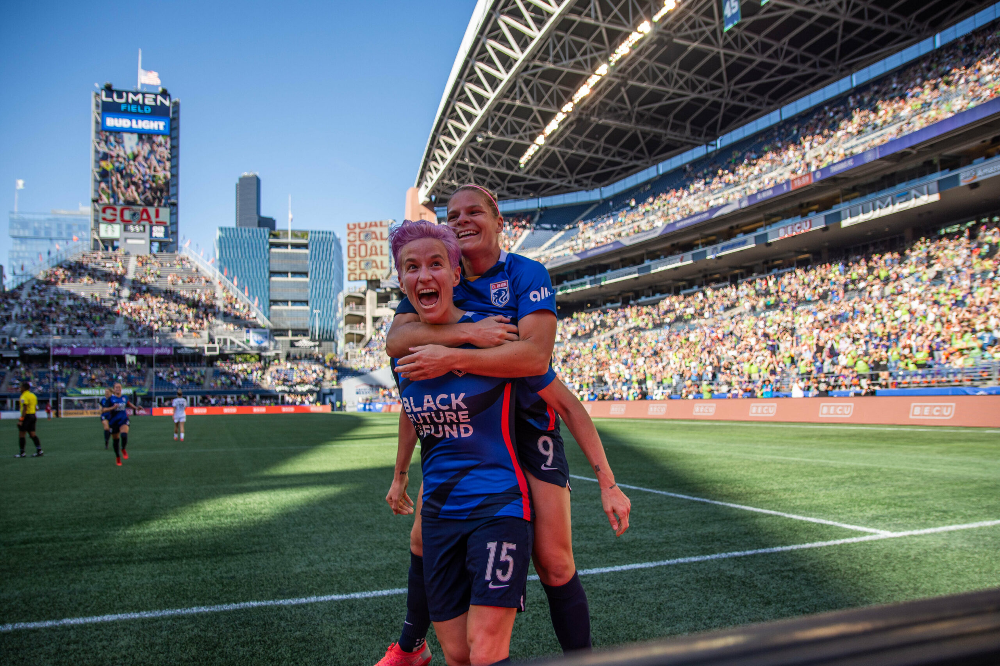
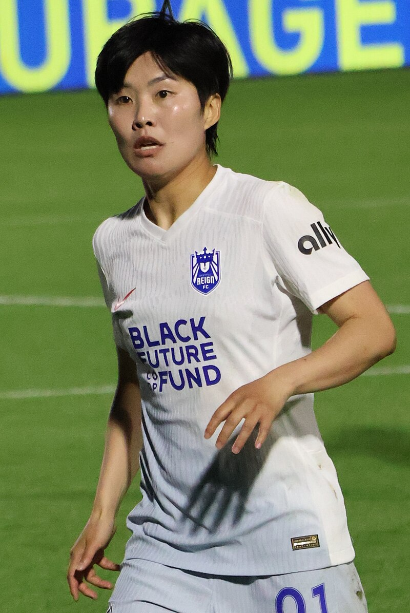

Home of Seattle's NWSL Team
Follow Reign FC as they battle through the NWSL season. Get the latest updates on games, team history, and stadium details.
Learn MoreFollow Reign FC as they battle through the NWSL season. Get the latest updates on games, team history, and stadium details.
Learn MoreReign FC finished the 2024 season with a 6-5-15 record, finishing 13th in the NWSL.
As of March 18, 2025, Reign FC are looking at a 0-1-0 record and are looking forward to their match against the North Carolina Courage on March 22nd.
March 22 @ North Carolina Courage
March 30: @ Angel City FC
 Seattle Reign FC joined the NWSL as one of its eight inaugural members in 2012. Since then they have been Runner-up in the NWSL Championship three times in 2014,2015, and in 2023.
 The team has had many great players like Jess Fishlock, Sofia Huerta, and Ji So-yun.
Link Light Rail: Two Stations at Stadium and Chinatown
King County Metro: 15 Daily Bus Routes that stop within 3 blocks of Lumen Field
Driving: Two Parking lots next to Lumen Field, Lumen Field Parking Garage and North Lot Parking